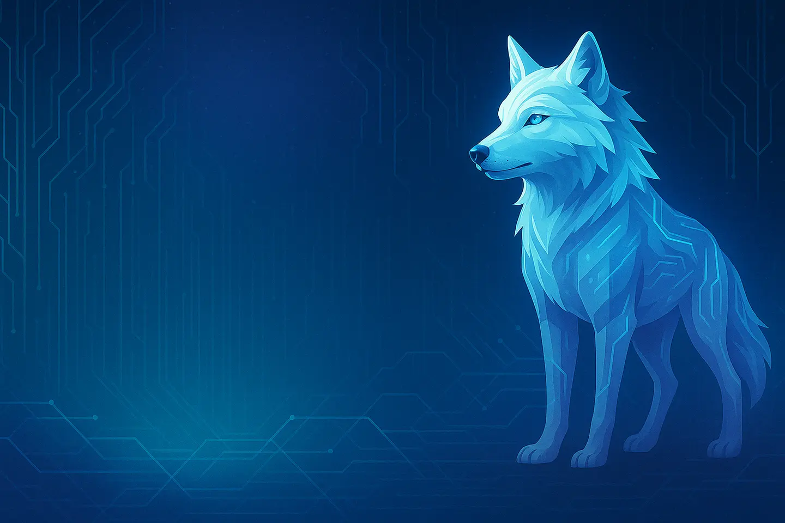

Sauber entwickeln
Klare Strukturen, nachvollziehbare Entscheidungen und Lösungen, die sich weiterbauen lassen.
Code · Systeme · Design
Ich entwickle Software, automatisiere Abläufe und betreibe eigene Infrastruktur. Nicht als Hochglanz-Theorie, sondern als Systeme, die im Alltag wirklich laufen.

Mein Ansatz
Vom ersten Skript bis zum eigenen Server: Mich reizt nicht nur das Ergebnis, sondern der Weg dorthin. Gute Technik darf komplex sein – aber sie sollte am Ende klar, wartbar und verlässlich bleiben.
Klare Strukturen, nachvollziehbare Entscheidungen und Lösungen, die sich weiterbauen lassen.
Cloud, Mail, Gameserver und Websites auf einer Infrastruktur, die ich selbst kontrolliere.
Probleme zerlegen, Lösungen testen und Wissen nicht nur sammeln, sondern anwenden.
Ausgewählte Arbeiten
Software, Infrastruktur und Experimente – gewachsen aus echten Anforderungen und jeder Menge Neugier.
Eine modulare Verwaltungsanwendung für Fischereivereine – mit Mitgliederverwaltung, Arbeitsdiensten, Signaturen, Exporten und einer eigenen Update-Infrastruktur.
NixOS-basierte Infrastruktur mit Hosting, Cloud, Mail, Monitoring und Game-Servern.
Ein modulares Steuerungsinterface für Sprache, OSC, Geräte und VRChat-Interaktionen.
Projekt öffnen →Kontakt
Schreib mir direkt. Gute Projekte beginnen erstaunlich oft mit einer simplen Nachricht.